Better State
Areas defines what becomes clearer, easier, or safer when Signal is the chosen route.
Coverage / 01
Coverage opens as a clear telecommunications decision hub: what Signal offers, who it helps, why it matters, and which route to take first.
The first screen combines positioning, proof, primary action, and fast internal navigation, so people can act immediately or compare the rest of the coverage route with context.
Black full-bleed coverage hero
Select the closest route and Signal keeps the next step, proof, and follow-up expectation aligned with availability and reliability.
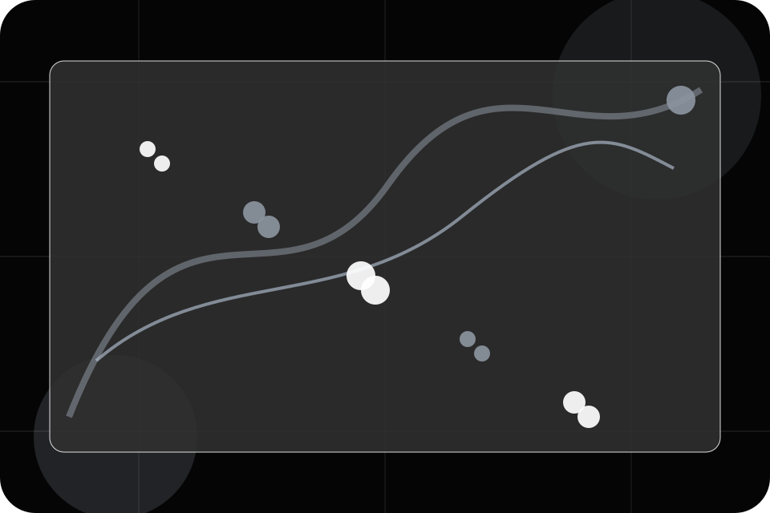
Coverage / 02
Areas defines the better state Signal is built to create, with enough detail to make the promise believable.
A coverage-first telecom site with stark dark hero, satellite-map panels, speed proof, and direct address checking. The section grounds that direction in concrete benefits, visible tradeoffs, and a next route visitors can use when the promise feels relevant.
Explore Coverage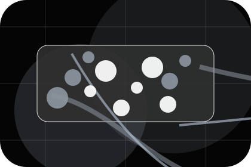
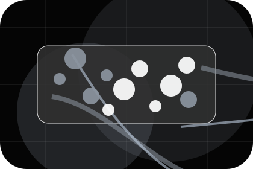
Areas defines what becomes clearer, easier, or safer when Signal is the chosen route.
Coverage / 03
Map defines the better state Signal is built to create, with enough detail to make the promise believable.
A coverage-first telecom site with stark dark hero, satellite-map panels, speed proof, and direct address checking. The section grounds that direction in concrete benefits, visible tradeoffs, and a next route visitors can use when the promise feels relevant.
Explore CoverageMap defines what becomes clearer, easier, or safer when Signal is the chosen route.
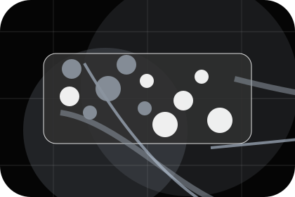
The benefit is tied to availability and reliability, not a vague quality claim.
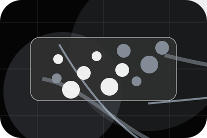
Visitors get a linked path to compare the promise against services, standards, or examples.
Coverage / 04
Check defines the better state Signal is built to create, with enough detail to make the promise believable.
A coverage-first telecom site with stark dark hero, satellite-map panels, speed proof, and direct address checking. The section grounds that direction in concrete benefits, visible tradeoffs, and a next route visitors can use when the promise feels relevant.
Explore CoverageCheck defines what becomes clearer, easier, or safer when Signal is the chosen route.
The benefit is tied to availability and reliability, not a vague quality claim.
Visitors get a linked path to compare the promise against services, standards, or examples.
Coverage / 05
Expansion defines the better state Signal is built to create, with enough detail to make the promise believable.
A coverage-first telecom site with stark dark hero, satellite-map panels, speed proof, and direct address checking. The section grounds that direction in concrete benefits, visible tradeoffs, and a next route visitors can use when the promise feels relevant.
Explore CoverageExpansion defines what becomes clearer, easier, or safer when Signal is the chosen route.
The benefit is tied to availability and reliability, not a vague quality claim.
Visitors get a linked path to compare the promise against services, standards, or examples.
Coverage / 06
Waiting defines the better state Signal is built to create, with enough detail to make the promise believable.
A coverage-first telecom site with stark dark hero, satellite-map panels, speed proof, and direct address checking. The section grounds that direction in concrete benefits, visible tradeoffs, and a next route visitors can use when the promise feels relevant.
Explore CoverageWaiting defines what becomes clearer, easier, or safer when Signal is the chosen route.
The benefit is tied to availability and reliability, not a vague quality claim.
Visitors get a linked path to compare the promise against services, standards, or examples.
Coverage / 07
Availability defines the better state Signal is built to create, with enough detail to make the promise believable.
A coverage-first telecom site with stark dark hero, satellite-map panels, speed proof, and direct address checking. The section grounds that direction in concrete benefits, visible tradeoffs, and a next route visitors can use when the promise feels relevant.
Explore Coverage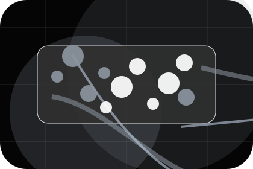
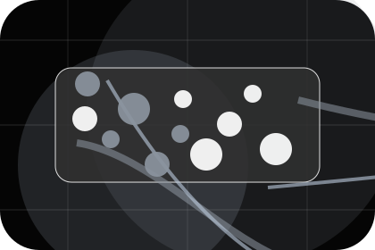
Availability defines what becomes clearer, easier, or safer when Signal is the chosen route.
Coverage / 08
Reliability defines the better state Signal is built to create, with enough detail to make the promise believable.
A coverage-first telecom site with stark dark hero, satellite-map panels, speed proof, and direct address checking. The section grounds that direction in concrete benefits, visible tradeoffs, and a next route visitors can use when the promise feels relevant.
Explore CoverageReliability defines what becomes clearer, easier, or safer when Signal is the chosen route.
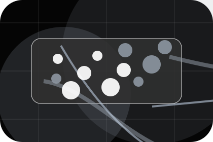
The benefit is tied to availability and reliability, not a vague quality claim.
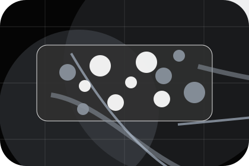
Visitors get a linked path to compare the promise against services, standards, or examples.
Coverage / 09
Questions defines the better state Signal is built to create, with enough detail to make the promise believable.
A coverage-first telecom site with stark dark hero, satellite-map panels, speed proof, and direct address checking. The section grounds that direction in concrete benefits, visible tradeoffs, and a next route visitors can use when the promise feels relevant.
Open ContactQuestions defines what becomes clearer, easier, or safer when Signal is the chosen route.
The benefit is tied to availability and reliability, not a vague quality claim.
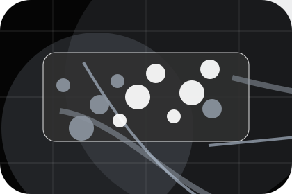
Visitors get a linked path to compare the promise against services, standards, or examples.
Signal starts with a focused intake so the recommendation matches the visitor's context, risk, timing, and readiness.
Each route explains inclusions, exclusions, documents, timing, and the decision points that affect final delivery.
The theme uses space coverage landing, satellite coverage cards, and coverage checker mockup, plan filter, outage alert panel rather than a shared template rhythm.
Black full-bleed coverage hero
Select the closest route and Signal keeps the next step, proof, and follow-up expectation aligned with availability and reliability.
Coverage / 10
Signal closes the coverage route with a clear action, a quick reminder of the value, and a low-friction way to check coverage.
Visitors who are ready can use the primary action. Visitors who are still comparing can scan the section links, proof, and support routes before they check coverage.
Check CoverageThe final block keeps the choice simple: act now, compare one more proof route, or send enough detail for a focused response.
Check Coverageavailability and reliability
A coverage-first telecom site with stark dark hero, satellite-map panels, speed proof, and direct address checking. Coverage ends with a direct path to check coverage, plus enough context for visitors who still need to compare.
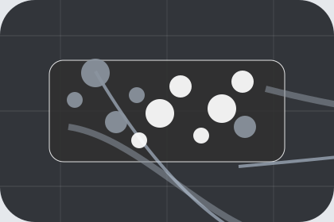
Check CoverageInformation is provided for planning and should be reviewed for the final client, location, and operating rules.